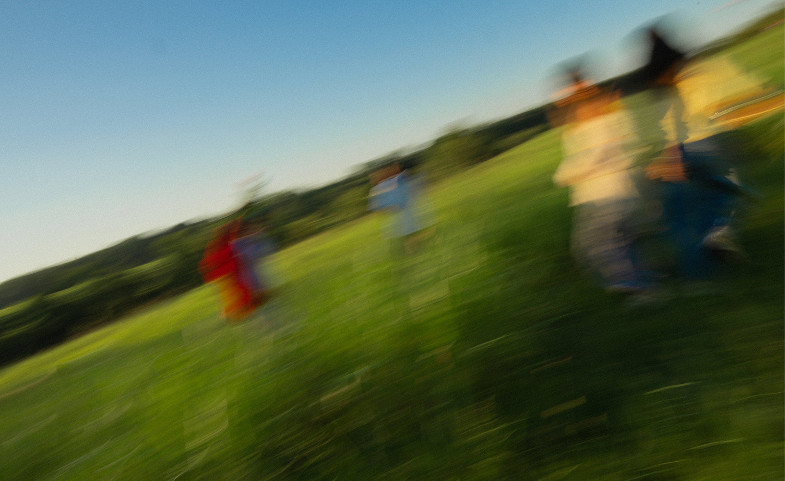

branding
Idiosyncrasy: always has a sweet drink that she's been sipping on for the last 5 hours.

Idio is a full-service creative
agency.
We're a full-service creative agency—an all-in-one business that manages all of your branding and marketing needs. From the day the dream is born, to strategy, branding, design, content, and finally to marketing, our team can walk you through one, or every step to provide you quality and cohesive results. It's kind of like a smartphone. Why have a flashlight, a flip phone, and a camera when you could have it all in one place?
Idiosyncrasy: always has a sweet drink that she's been sipping on for the last 5 hours.
Idiosyncrasy: always has a sweet drink that she's been sipping on for the last 5 hours.
Idiosyncrasy: always has a sweet drink that she's been sipping on for the last 5 hours.
Idiosyncrasy: always has a sweet drink that she's been sipping on for the last 5 hours.